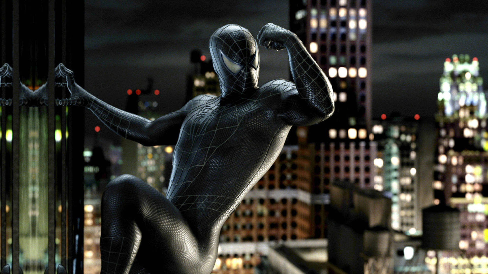

Simbionte
¿Quien es?
Esta versión aparece cuando Peter Parker entra en contacto con un simbionte alienígena. El traje negro mejora su fuerza, velocidad y agresividad, pero también influye en su personalidad, volviéndolo más impulsivo y violento. Representa una etapa oscura del personaje.
Primera aparicion
En los cómics apareció por primera vez en The Amazing Spider-Man #252 en 1984. En cine, apareció en Spider-Man 3.
Descripcion
Esta versión surge cuando Peter entra en contacto con un simbionte extraterrestre que se adhiere a su traje. Le otorga mayor fuerza y resistencia, pero también afecta su personalidad, haciéndolo más agresivo.
Dato interesante
El diseño del traje negro nació de una idea enviada por un fan a Marvel y luego fue adaptada oficialmente al universo del personaje.